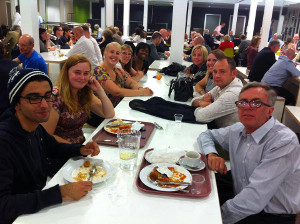
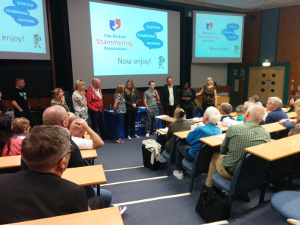
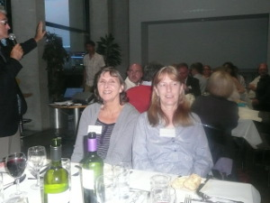
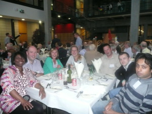
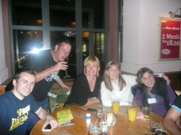

Articles
- Photo Gallery
- Coalfields Community Trust
- Grassroots
- MACH 1
- Daily Mail Article - 8th October 2015
- Support Group Article in the British Stammering Association Newsletter, Winter 2013. Click here to download pdf file
- Self Help Group [pdf file - click here to download reader]
Photo Gallery
| Members of the Support Group at the BSA Conference in Glasgow Friday 22nd August - Sunday 24th August 2014 | |||

|
 | ||
| Karen, Jenny, Yinka and Joan outside the Glasgow Science Centre | Having lunch at the BSA Conference | ||
| Warrington Support Group Members Contribution to the Open Mic at the BSA Comference | |||
|  | |||
| Members of the support group at the BSA conference in Lincolnshire, August 31st - 2nd September 2012. Relaxing with a meal after a hard day attending workshops. | |||
|  |  | ||
|  | |||
Coalfields Community Trust
June 2012The Coalfields Community Trust has awarded the support group £4200, this will pay for 10 members to attend a 3 day BSA Conference to be held at Lincolnshire on 31st August 2012, it will also pay for 4 members to attend a Star Fish Programme after the success of last years attendees.
Governments Grass Roots.
The Warrington Support group has been awarded funding to enable eight delegates to attend a four days intensive training using the MACH 1 programme to be held in Warrington, September 2009.Mastering Change Ltd. was set up by Geoff Brown and Barbara Gommersall, specifically to develop the MACH 1 programme to help people who stammer.
Geoff, as a client has attended a multiplicity of stammering therapy courses in the UK and abroad and brings a wealth of personal experience.
Barbara is an NLP Master Practitioner and INLPTA certified NLP Trainer with fifteen years experience in training, personal development and therapeutic practice.
Daniel (assistant trainer) is also an NLP Master Practitioner and has been using NLP with individuals and in a corporate setting for six years
The MACH 1 programme takes you through a process that deals with who you are, your patterns of thinking and the belief structures that support stammering behaviour. The programme will help you make important changes to the way you think and behave - changes that will continue to have positive effects long after the course is ended.
You will learn more about yourself, find out how to detach from negative experiences in the past and discover how to create outcomes that help you to move towards the things that are really important to you.
You will create and maintain positive and resourceful feelings and states of mind that are not dependent on external experiences
Yinka Dolan from the Warrington Support Group for people who stammer has received funding from Grass Roots, therefore the cost which is normally £450 per person will be free of charge, there will be up to three places available, the support group are looking for more members to join, and as such members will be offered this fantastic opportunity on a first come first served basis.
The Warrington Community Voluntary Service assisted Yinka Dolan in securing the funding
The Warrington Support Group is based at the Halliwell Jones Stadium, home to Warrington Wolves Rugby football team and the NHS - Speech Therapy department, the group is supported by the Warrington and Halton Speech Therapy departments.